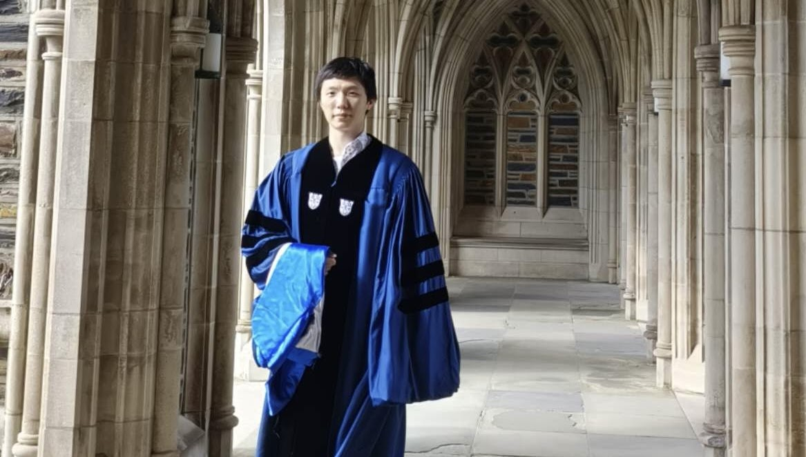

Mathematics · Control · Learning
周默
我现任北京大学数学科学学院信息与计算科学系助理教授，并任中国数学会数学与人工智能专业委员会会员。2023 年，我获得杜克大学数学博士学位，导师为鲁剑锋教授；2018 年，我获得清华大学数学学士学位。2023 至 2026 年间，我在加州大学洛杉矶分校从事教学与科研工作，并得到 Stanley Osher 教授指导。
我的研究位于机器学习、控制理论与科学计算的交叉领域，重点关注随机最优控制、平均场控制与博弈、强化学习、归一化流，以及生成式模型。
电子邮箱：zhoumo (at) math (dot) pku (dot) edu (dot) cn
新闻
- 加入北京大学数学科学学院信息与计算科学系，任助理教授。
- 成为中国数学会数学与人工智能专业委员会会员。
- 通过 UCLA Assistant Adjunct Professor 的 Merit Case 晋升评审。
- 入选 UCLA Institute for Digital Research and Education Fellow（IDRE Fellow）。